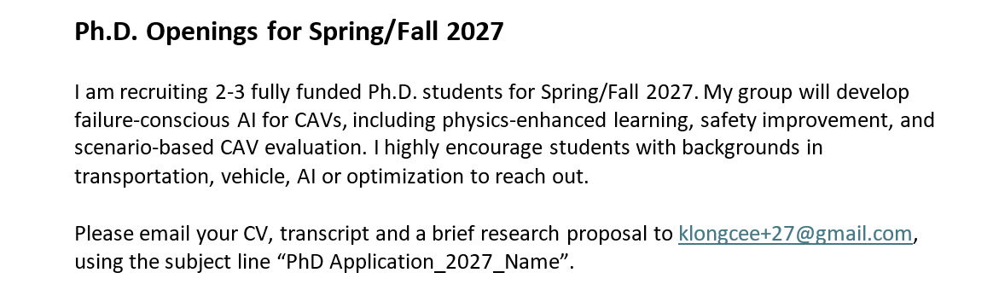

This December, we will host the inaugural MIRAI Driving Workshop at ACCV 2026 in Osaka, Japan. Four keynote speakers from Purdue University, Waymo, KAIST, and Hokkaido University will share the latest advances in multimodal intelligence and autonomous driving. The workshop will take place on December 15, 2026. We look forward to welcoming you to Osaka for the workshop and discussion. MIRAI Driving Workshop @ ACCV 2026.
Physics-Enhanced AI · CAVs · ITS
Building Transportation AI that can be Trusted.
Safety &
Mobility
Control
Reason
Perception
Validate
Mobility
About Me
I am a postdoctoral Research Associate at the University of Wisconsin–Madison. My research develops physics-enhanced AI for intelligent transportation systems (ITS), with applications in CAV decision-making, control, perception, and safety evaluation.

DetailsResearch
Physics-Enhanced AI for Transportation
Developing interpretable, physically consistent, and robust AI methods for transportation systems.
Connected and Automated Vehicles
Evaluating and improving the safety and performance of CAVs in challenging scenarios.
Intelligent Transportation Systems
Studying how people, vehicles, and transportation infrastructure can be connected and coordinated to improve safety and efficiency.
Affiliation
-
Postdoctoral Research Associate, University of Wisconsin–Madison
2024.12–Present
Education
-
Ph.D., Civil and Environmental Engineering, University of Wisconsin–Madison
Supervisor: Prof. Xiaopeng Li · 2022.08–2024.12 -
Doctoral Studies, Civil Engineering, University of South Florida
Supervisor: Prof. Xiaopeng Li · 2021.08–2022.08 -
M.S., Transportation Information and Control Engineering, Tongji University
Supervisor: Prof. Xiaoguang Yang · 2018.09–2021.06 -
B.Eng., Traffic Engineering, Chang’an University
2014.09–2018.06
Teaching
- Fundamentals for Connected and Automated Vehicle (CAV) Modeling, CCAT — Co-instructor
- CIV ENGR 570: Connected and Automated Transportation Systems — Teaching Assistant, UW–Madison, Spring 2025
- CIV ENGR 525: Case Studies Exploring Infrastructure Sustainability and Climate Change — Teaching Assistant, UW–Madison, Spring and Fall 2024
- CIV ENGR 574: Traffic Control — Teaching Assistant, UW–Madison, Fall 2023 and Fall 2025
- ENG 356: Statics — Teaching Assistant, University of South Florida, Fall 2021
Service
Reviewer
- Transportation Research Part B / C / E
- Accident Analysis and Prevention
- Engineering Applications of Artificial Intelligence
- Computers and Electrical Engineering
- Expert Systems with Applications
- Transportation Research Record
- Transportation Research Board Annual Meeting
- Robotics and Autonomous Systems
- Cleaner Logistics and Supply Chain